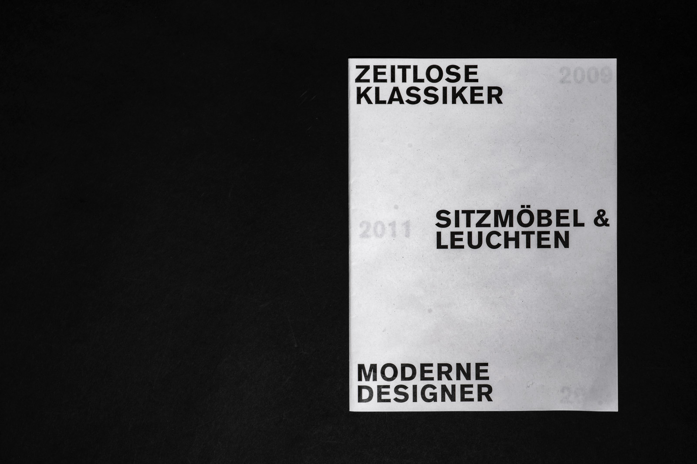
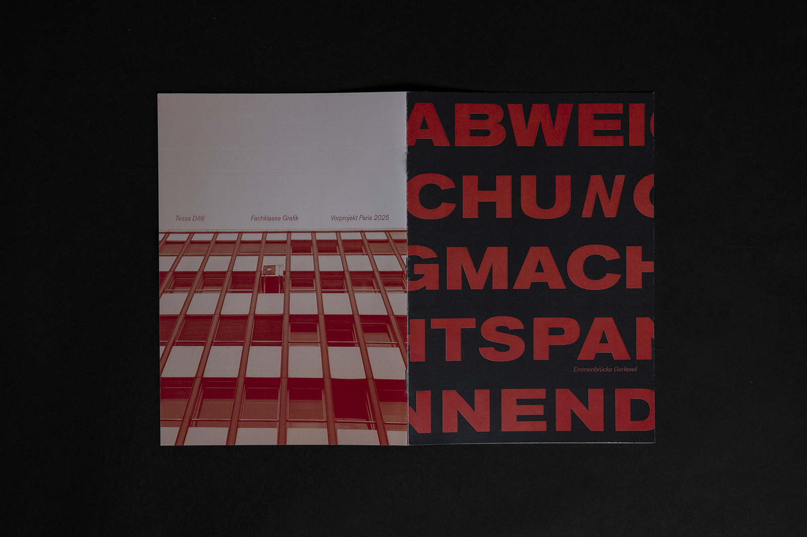

tessa dittli
Ich bin Tessa Dittli und studiere Grafikdesign an der Fachklasse Grafik in Luzern. Auf dieser Website zeige ich drei ausgewählte Projekte aus meinem Studium. Sie zeigen, wie ich mit Farben, Formen und Schrift arbeite und wie ich Ideen visuell umsetze. Mir ist wichtig, dass Gestaltung klar, einfach und stimmig ist.
Projekt 1 

Projekt 3 
Zeitlose Klassiker ist mein Layout-1-Projekt in Form einer Broschüre. Darin werden Designlampen von Charlotta de Bevilacqua vorgestellt und jeweils mit kurzen Begleittexten ergänzt. Das Layout basiert auf einem klaren Raster, das für Struktur und Übersicht sorgt. So stehen die Lampen und ihre Gestaltung im Mittelpunkt, während das reduzierte Design die zeitlose Qualität der Produkte unterstreicht.
Zeitlose Klassiker
Passage à tous les étages ist ein Projekt über die Passage du Grand Cerf und ihre drei Etagen. Es ist in drei horizontale Spalten aufgeteilt. Jede Spalte zeigt die Atmosphäre einer Etage. Mit Texten, Bildern und Skizzen werden die unterschiedlichen Stimmungen und Räume der drei Ebenen dargestellt. So wird sichtbar, wie sich die Atmosphäre von Etage zu Etage verändert und wie jede Ebene ihren eigenen Charakter hat.
Passage à tous les étages
Abweichung macht spannend ist mein Paris-Vorprojekt. Es zeigt Bilder aus Emmenbrücke, in denen regelmässige Muster oder scheinbar perfekte Strukturen durch kleine Abweichungen unterbrochen werden. Diese Unregelmässigkeiten ziehen den Blick an und machen das Gewöhnliche interessant. Das Projekt untersucht, wie gerade kleine Störungen oder Brüche eine starke Wirkung haben und Spannung im Alltag erzeugen.
Abweichung macht spannend